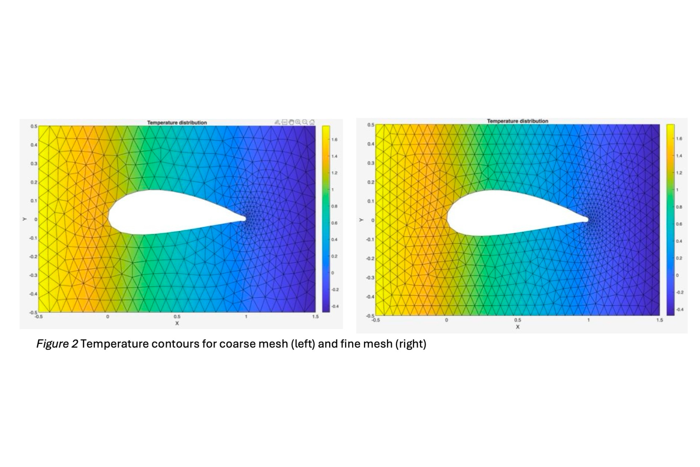
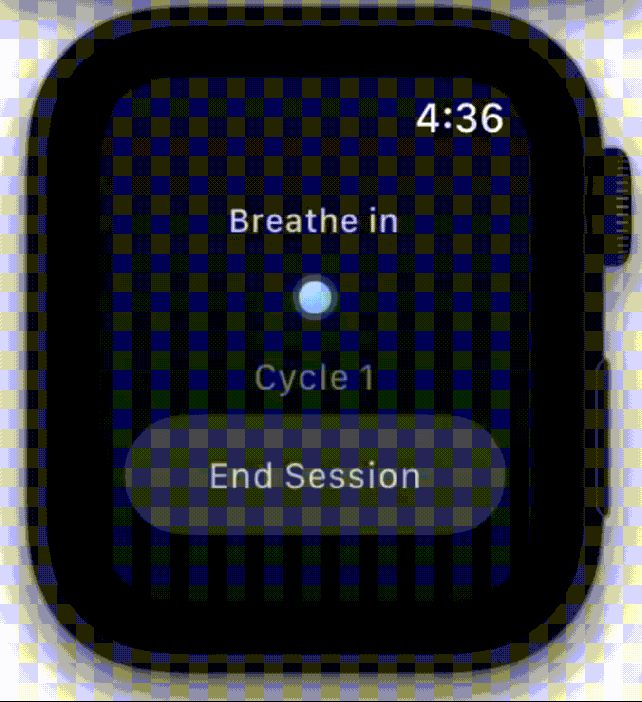

Projects
Robotics • Mechanical Design and Assembly • Electrical Integration • Simulation

Kangaroobot
A kangaroo-inspired walking robot with 8 servos & Raspberry Pi. With a unique gait, it achieves walking speed of 30cm/s.
View details →
SpaceCap
RPP robotic arm with a 2-claw gripper to capture orbital debris. Full mechanical, electrical, and software integration for open-loop control.

PRRR Autonomous Surveillance Robot
Designed and simulated a 4 DOF manipulator intended for under-vehicle inspection and maintainance. Verified kinematics, workspace, and trajectory analysis using DH table and MATLAB.
View details →
mTPAD Redesign
Structural component redesign for a mobile Tethered Pelvic Assist Device (mTPAD) to increase modularity while maintainig load bearing performance.
To be kept confidential 🦾
2D FEM Solver
Developed FEM for potential flow, pressure field, and velocity around airfoil cutout, postprocessing and verification.
Honorable mention✨
Anxiety Wellness
A wellness software to detect, mitigate, and track panic attacks with sensors integrated with Apple Watch.
Honorable mention✨